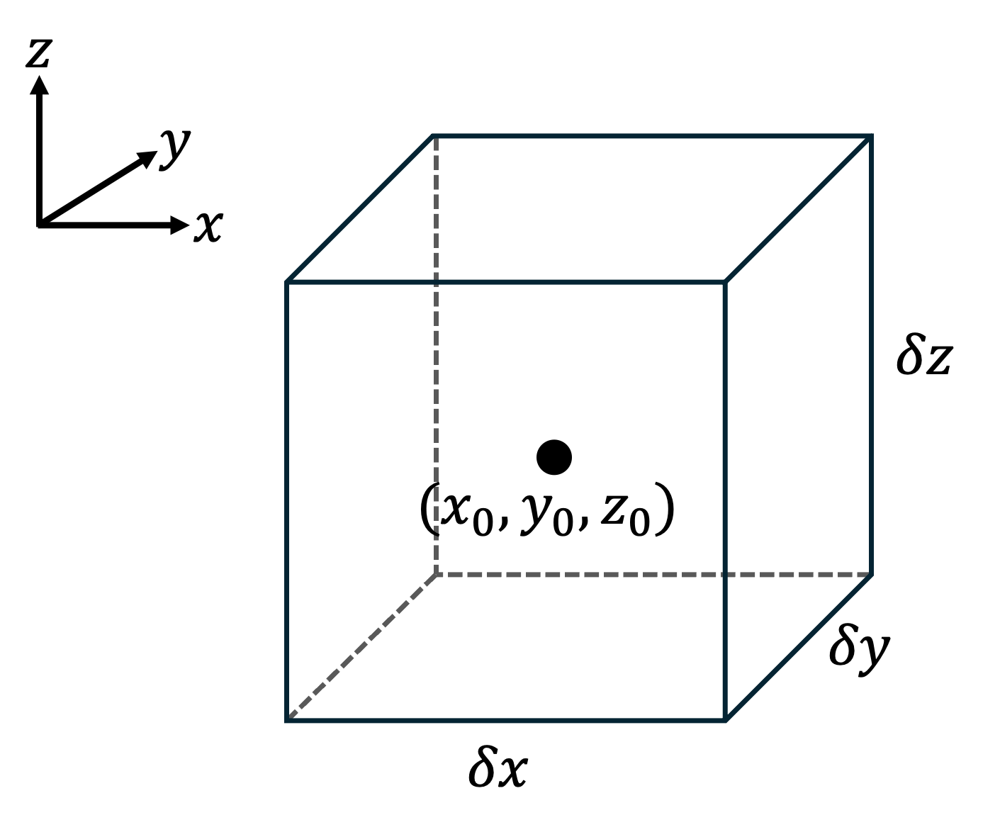
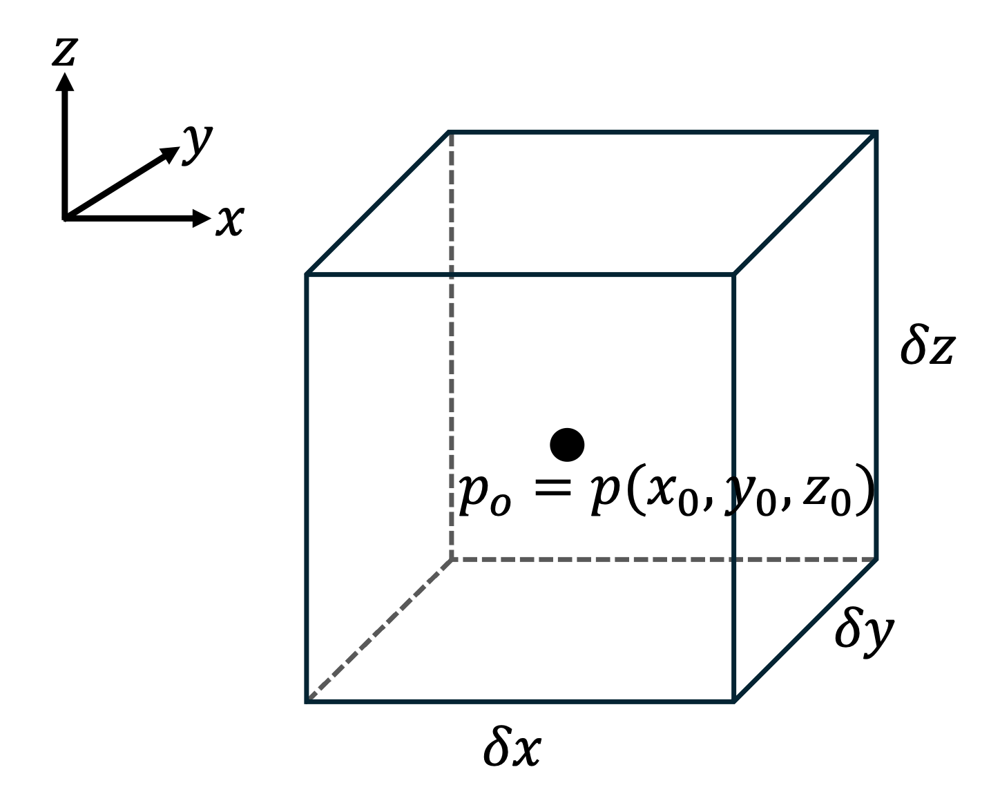
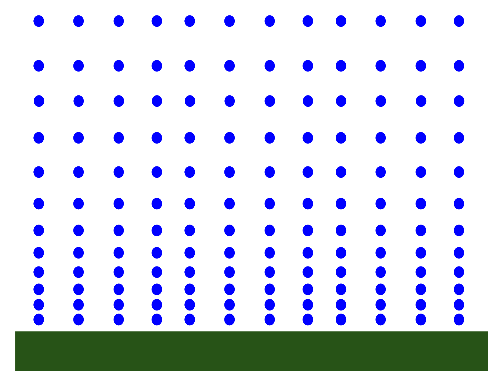
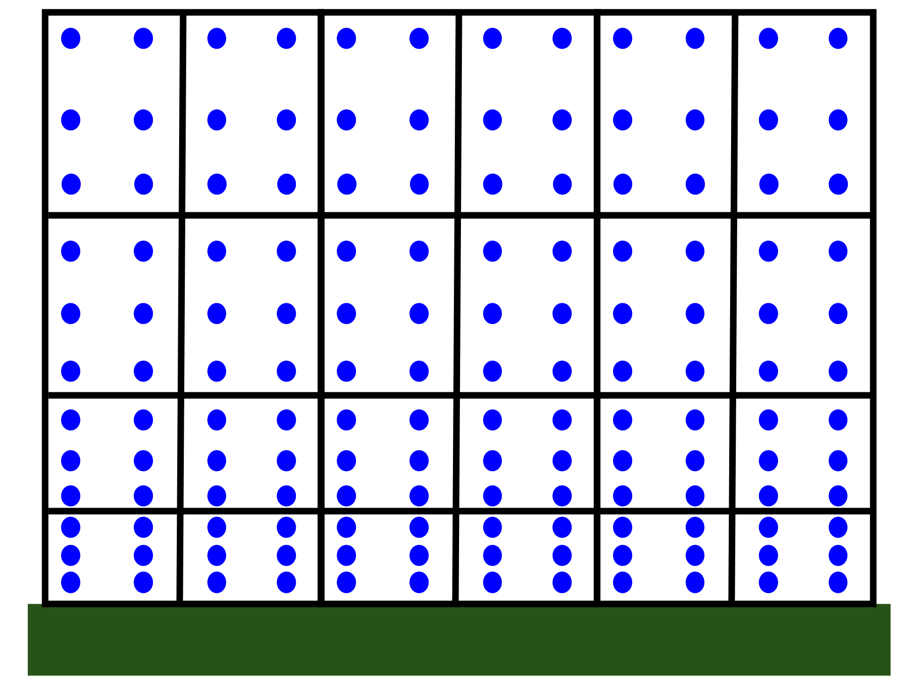

Section 1.1 Continuum approximation
Earth’s atmosphere is composed of a mixture of gases: molecular nitrogen (\(\mathrm{N}_2\)), molecular oxygen (\(\mathrm{O}_2\)), water vapor (\(\mathrm{H}_2\mathrm{O}\)), and others. Individual gas particles are very small, and much empty space generally lies between them on average. Each gas particle moves continuously and randomly, although larger-scale organized motion like wind can be superimposed on a collection of gas particles and dominate their overall motion.
Relatively few suspended liquid and solid particles like cloud droplets, ice crystals, and particulate matter occupy a small bit of the empty space between gas particles, with concentrations that vary in space and time. Briefly, precipitation particles reside in the atmosphere as they fall out of their parent clouds toward the ground.
Keeping track of the partially random motions of numerous discrete particles in Earth’s atmosphere is unnecessary for our purposes, since even the smallest atmospheric motions we are interested in occur on scales multiple orders of magnitude larger than microscopic interparticle distances and affect many particles at once. Instead, we make use of the continuum approximation: We assume the atmosphere’s mass is continuously distributed in space rather than held in discrete particles. This approximation is made for fluids when the length scale of a motion of interest is much larger than the average distance between particles making up the fluid (see the Knudsen number), which is true for most atmospheric motions of interest.
Points within the atmospheric continuum are not geometric points without size, but instead are volume elements of any convenient shape that are much smaller than the atmospheric flows of interest within which they are caught up yet contain many discrete particles. An example of a volume element is shown in Figure 1.1.1 below.

We assume the discrete particles contained within a volume element are distributed homogeneously through it. Local averages of temperature, pressure, density, velocity, and other state variables computed for the collection of particles contained within a volume element describe the volume element at any moment in time—without reference to its history—and are assumed to be uniform throughout the volume element. A representative value of any state variable is measured at the center of the volume element. For example, the pressure \(p\) measured at the central point of a volume element\((x_0, y_0, z_0)\) is given by \(p_0 = p(x_0, y_0, z_0)\text{,}\) as shown in Figure 1.1.2 below.

Some volume elements move through Earth’s atmosphere with velocity
\begin{equation*}
\vec{u} = u \, \hat{i} + v \, \hat{j} + w \, \hat{k}
\end{equation*}
(and we assume all discrete particles within the element move at this velocity). Other volume elements remain fixed to specific locations on Earth’s surface or within its atmosphere while many mobile volume elements flow through their open boundaries with velocity \(\vec{u}\text{.}\) The former volume elements, whose paths through the atmosphere can be tracked over time, are called air parcels, air particles, material elements, or material volumes, and the portion of the atmosphere through which they move is called their environment. The latter volume elements, which are centered at permanent locations in the Earth system for all time, are called control volumes. These different types of volume elements lead to two different but connected frameworks from which we can conceptualize atmospheric flow: the Lagrangian framework and the Eulerian framework. We will explore these frameworks in Subsection 1.2.4.
Figure 1.1.3 below summarizes the essential components of the continuum approximation: Figure 1.1.3(a) shows a simple depiction of discrete particles in Earth’s atmosphere, and Figure 1.1.3(b) shows volume elements imposed within the atmosphere, each containing many discrete particles.

